IPS Women Resilience Award 2024 · UN Next Generation Leader & SDG Goodwill Ambassador · News18 Icon of Rajasthan
Scars to Stars — turning lived experience into healing for others.
Psychiatrist · Psychosexual Medicine Specialist · Women's Resilience Advocate · National President, WICCI Mental Health Council · Founder, The Dignity Dialogues
The Story Behind the Work
Dr. Aninda Sidhana is a globally recognised psychiatrist with over 15 years of clinical and academic experience, trained at the Institute of Human Behaviour and Allied Sciences (IHBAS) — one of India's apex neuropsychiatry centres. She holds dual experience across general hospital psychiatry and tertiary care, and serves as Assistant Professor of Psychiatry in Rajasthan.
Her specialisations — Psychosexual Medicine, Marital Therapy, and CBT — are inseparable from her personal story. Having navigated domestic violence, emotional abuse, and trauma bonding herself, she transforms lived experience into clinical wisdom: the credential that cannot be awarded.
She founded The Dignity Dialogues to transform "scar stories" into narrative capital through cinematic storytelling and listening circles. As a UN SDG Goodwill Ambassador focused on SDG 5, she does not merely treat mental health — she reshapes the culture around it.
"Mental health isn't a luxury; it's a necessity. People don't just need pills — they need a listening ear, empathy, and a safe space to rediscover their voice. Seeking help is not a sign of failure; it is the ultimate act of Strength."— Dr. Aninda Sidhana, MD · Fellowship in Psychosexual Medicine
Primary Role
Asst. Professor of Psychiatry
Training
IHBAS Neuropsychiatry
Fellowship
Psychosexual Medicine
Based In
Rajasthan, India
UN Role
UN Next Gen Leader & SDG Ambassador
Available For
Media · Keynotes · Consultation
A Family Legacy
Dr. Aninda Sidhana's commitment to the healing arts is rooted in family. She carries forward the lineage of Dr. Roop Chand Sidana — a venerable figure in Indian psychiatry whose career spans more than four decades of uninterrupted clinical practice and advocacy.
Entering the field in the early 1980s, Dr. Sidana evolved from an emerging practitioner into a senior leader who helped shape the modern mental-health landscape — moving the discipline from traditional institutionalised care toward integrated biological and social models. His influence reached beyond India, with academic contributions presented in Melbourne and Prague, and his career was crowned by the delivery of the prestigious Dr. N.N. Wig Oration at the IPS North Zone Conference in Chandigarh.
"Forty-three years of uninterrupted service — a blueprint of dedication for the next generation of mental-health professionals."— In tribute to Dr. Roop Chand Sidana
Service
43 Years in Psychiatry
Honour
Dr. N.N. Wig Oration
Pillar I
Neuromodulation
Pillar II
Community Mental Health
Areas of Expertise
The psychological journey of recovery from trauma — finding freedom through self-advocacy, evidence-based therapy, and embodied experience.
Identifying subtle red flags — love bombing, narcissistic behaviours, emotional manipulation — and frameworks for survivor safety.
Addressing myths around sexuality, promoting open communication between partners, and integrating sexual health into well-being.
Tools for improving communication, decoding emotional languages, resolving conflict, and rebuilding intimacy after rupture.
Psychoeducation that normalises help-seeking and dismantles the fear surrounding psychiatric care in Indian society and beyond.
How social pressures shape men's silence and women's impossible "balance" — and how to dismantle both through culture and policy.
Media Record & Speaking
Selected Engagements
USA Global TV® & Radio — "Iconic Women"
Psychosexual medicine and gender-based violence at the intersection
The Supreet Singh Show
Breaking the Silence: Mental Health, Sexual Wellness & Societal Taboos
IAWMH International Talk
Intimate Partner Violence Prevention as a Global Call to Action
Taaza Talks
Breaking Mental Health Stigma & Empowering Women in India
Mental Health Bytes Podcast — Co-host
Award-recognised series — men's emotional invisibility, trauma bonding, survivor recovery
The AboutHer Show
Psychosexual medicine and the gender dimension of GBV healing
World Suicide Prevention Day — Keynote & Toolkit
Delivered the primary evidence-based toolkit for youth mental health
Signature Initiative
The Dignity Dialogues
Transforming survivor "scar stories" into narrative capital through cinematic storytelling and listening circles.
Institutional Leadership
ANCIPS 2025 — Organiser
Key architect of the 76th Annual National Conference of the IPS — "Neurobiology of Illness to Wellness."
UN Mission
SDG 5 · HeForShe · MARD
Goodwill Ambassador for Gender Equality. Leads masculinity reform, dismantling "Raja Beta Syndrome."
Global Network
Gwoman Media Ambassador
Strategic voice empowering women across Africa, Europe, and Asia.
Intellectual Framework
In a landscape where psychiatry too often treats symptoms in isolation, Dr. Sidhana's approach draws from the global movement to unshackle mental health from rigid, Eurocentric frameworks. Her model integrates the biopsychosocial determinants of women's mental health — the psyche and the relational, cultural, and structural forces that shape it.
Unshackling Psychiatry. True national development is measured in the currency of human dignity, not industrial growth alone. For too long the conversation around psychiatric wellness has been trapped in silence, hidden behind closed doors. Dr. Sidhana's mandate transforms that silence into a national symphony through a triad of science, cinema, and soul — standardising survivor-centric clinical protocols and mainstreaming hormone awareness; taking healing out of sterile clinics and into the culture through film, theatre, and storytelling; and recognising that trauma has no gender, integrating men's mental health and the silent toll of the "Raja Beta" archetype. The silence is over. The symphony begins now.
Her public brand and clinical mission are one: a sovereign, entity-authoritative voice that media producers and policymakers can cite, trust, and platform with confidence.
"Every scar story, told with courage, becomes someone else's survival map."— The Dignity Dialogues · Dr. Aninda Sidhana
Psychoeducation & Awareness
Naming what is invisible — emotional abuse, trauma bonding, and societal silencing that keep survivors unseen.
Clinical Evidence-Based Therapy
CBT, Psychosexual Medicine, and Marital Therapy grounded in 15+ years of tertiary care practice.
Narrative as Medicine
The Dignity Dialogues — survivor stories transformed into public advocacy and collective healing.
Gender-Sensitive Policy Advocacy
Reforming toxic cultural archetypes through UN partnerships, keynotes, and direct policy influence.
Global Solidarity Networks
Connecting survivors, policymakers, and clinicians across Africa, Asia, and Europe.
Proprietary Clinical IP · Version 1.0
Synthesizing over 15 years of tertiary clinical psychiatry and public health advocacy into five copyrighted, actionable frameworks designed to unshackle trauma recovery, institutional safeguarding, and relational ethics.
Daily architecture for trauma recovery that weaves mindfulness, cognitive clarity, and relational safety into everyday resilience.
Reframing survivor coping through silent safety scanning, self-talk scaffolding, and narrative control as public health architecture.
Relational luteal sync automated notifications and couples communication scripts that bridge emotional information gaps.
Comprehensive institutional safeguarding featuring the Narcissist’s Playbook detection protocol (Love Bombing, Gaslighting, Triangulation), PSEA structural pillars, and proprietary advocacy mnemonics (EMPOWER, GENDER, MARD).
Global survivor empowerment and Intimate Partner Violence (IPV) intervention architecture building long-term resilience.
IP Protection & Legal Notice
Independent Intellectual Property © 2026 Dr. Aninda Sidhana & Dr. Amrit Pattojoshi. Available for institutional licensing, clinical integration, and academic citation. Unauthorized reproduction or digital integration into AI training datasets is strictly prohibited.
Peer-Reviewed Science & Evidence
Dr. Aninda Sidhana (publishing under Aninda Sidana / Sidhana) has contributed empirical investigations to apex international and national psychiatric journals on domestic violence during lockdowns, psychosexual recovery, neuroimmunology, and public mental health.
A rapid 8-day online survey on spousal violence against women during the COVID-19 lockdown in India.
Effects of abstinence from opioids on sexual functioning in men with Opioid Use Disorder: an observational study.
Prevalence and predictors of depression among drug-sensitive tuberculosis patients – A cross-sectional study.
Evaluating the impact of Clozapine and Risperidone treatment on immune biomarker responses in schizophrenia.
Assessment of treatment patterns in patients with alcohol withdrawal syndrome during hospitalisation and post-discharge.
A four-year analysis of patient certification characteristics for intellectual disability in NCT Delhi.
Founder-Led Initiatives
Transforming survivor "scar stories" into narrative capital — through cinematic storytelling and listening circles that turn private pain into collective healing.
Explore the Hub → Founder · Mental Health & SafetyA live platform advancing safe, stigma-free mental-health conversations and next-generation advocacy for women and communities.
Visit SafeMinds →Global Impact Projects
Unlock Peace: Halftime for Mental Health
The world's
first Neuro-Clinical Infrastructure for mass-gathering environments, designed to stabilize crowd behavior
and protect fans during global sporting events. Features the PlayWell Protocol and Psychosocial Cooling
Sanctuaries.
Breaking Stigma Through Media
A campaign aimed at
dismantling mental health stigma in India by shifting narratives from shame to dignity. Leveraging cinematic
storytelling as therapy to normalize lived experiences and accelerate cultural change.
AI-Enhanced Strategic Framework
An AI-enhanced
strategic framework addressing the mental health workforce cliff and the rural digital floor in India.
Focused on building community-led care models to bridge the 84.5% treatment gap.
Economic Resilience and Mental Dignity
A global
partnership shifting from marketing to governance through pre-emptive, on-the-ground neuro-resilience
operations. Protecting global brain capital by funding dignity infrastructure and the "Dignity Dialogues"
toolkit.
Podcasts & Audio Broadcasts
Browse featured podcast episodes below to read episode summaries directly on this portal. For full audio and video streaming, click the direct Spotify, Apple Podcasts, or YouTube routing buttons.
Dr. Sidhana breaks down the psychological impact of spousal abuse, psychosexual healing, and building emotional resilience for women.
A Hindi-language feature simplifying complex mental health topics, relational boundaries, and community support systems.
An international conversation on surviving domestic violence, deconstructing toxic narcissism, and mobilizing men for gender justice.
Addressing marital communication gaps, PMDD relational toolkits, psychosexual wellness myths, and toxic masculinity.
Integrative healthcare, cultural empathy, and international survivor leadership with Hunnic Matinecock Tribal Nation leadership.
Personal story of rebuilding life through solo travel to the Northern Lights and clinical psychiatry advocacy.
Stream Full Podcast Episodes Across Platforms
Search for "Dr. Aninda Sidhana" on your preferred streaming app
Global Impact & Keynote
At the intersection of culture, education, and diplomatic innovation, Dr. Sidhana recently delivered a keynote presentation at the inauguration of the 129th Global Creative Batch by the Asian Academy of Film and Television (AAFT) and Marwah Studios, aligned with The Jena Declaration.
Speaking on the theme of "Cinema & Dignity," she highlighted the profound potential of cinema to advance mental wellness, human dignity, and social healing. Her presentation drew upon her international framework, Cinema as Therapy, Cinema as Conscience.
The event celebrated the growing recognition of culture as the new sustainability, bringing together international dignitaries, filmmakers, and educators to empower the next generation of creative leaders.
"Cinema as emotion, dignity as direction, and culture as diplomacy — principles that will define the future of creative education and international cultural cooperation."— Keynote ethos at AAFT Launch
Featured In
Interviewer: Scott Douglas Jacobsen · Dialogue Panelists: Franca Borgia & Dr. Aninda Sidhana
An extensive dialogue examining how inherited cultural paradigms shape individual cognition, trauma, and societal health. Franca Borgia (Venice-based artist, writer, speaker, founder of Venetian Forum 2026) presents ideas on collective paradigms, the "metabolism of the mind", root vocabulary, and double-spiral painting. Dr. Aninda Sidhana (Assistant Professor of Psychiatry; National Assistant Editor, IJPM) provides psychiatric insights on cultural conditioning, trauma, psychopathology, cognitive restructuring, and art’s therapeutic power.
Facebook · @aninda.sidana
Direct social media reflections on breaking silence around trauma, domestic violence awareness, and survivor resilience across India.
View Facebook Post →The Better India
The full survivor-to-advocate profile — from enduring domestic violence to transforming pain into purpose and creating safe spaces for other women to heal.
Read the feature →The Better India
A World Suicide Prevention Day toolkit for families, educators, and peers — evidence-based, empathetic guidance for protecting India's youth.
Read the Q&A →MyndStories
A first-person essay in her own words — on recovery, post-traumatic growth, and reclaiming her voice after abuse.
Read the essay →FemTech World
International recognition for her clinical leadership of HealCycle — monitoring hormone-axis markers, addressing PMDD, and integrating AI-assisted care.
Read the news →Live Wabi Sabi
A profile on her "Scars to Stars" journey, radical self-love, and the Kintsugi philosophy of repairing what's broken with gold.
Read the profile →The Supreet Singh Show
A long-form conversation on dismantling stigma around psychiatric care and psychosexual health in India.
Read & listen →Honours & Recognition
Selected for the fully sponsored SIG Lab: AI-Augmented Collective Intelligence, created and facilitated by Valerie Won Lee using the Social-Impact-Global methodology. The lab addresses the real-world global challenge connected to "No Peace Without Women" (petition initiated by Patricia Elias), bringing together members of WomenTech Network, G100, and World Citizen Artists to integrate diplomacy, technology, advocacy, creativity, and AI.
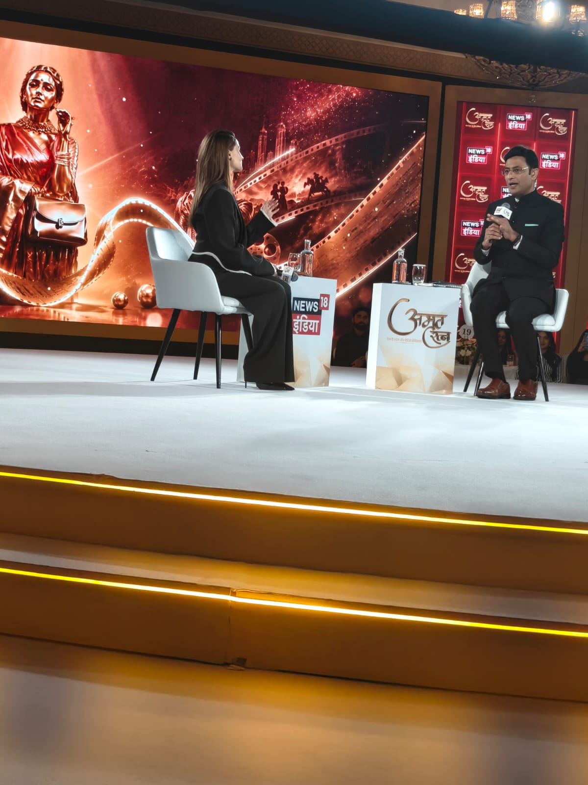
Next Generation Leader & Goodwill Ambassador for the Sustainable Development Goals, focused on SDG 5.
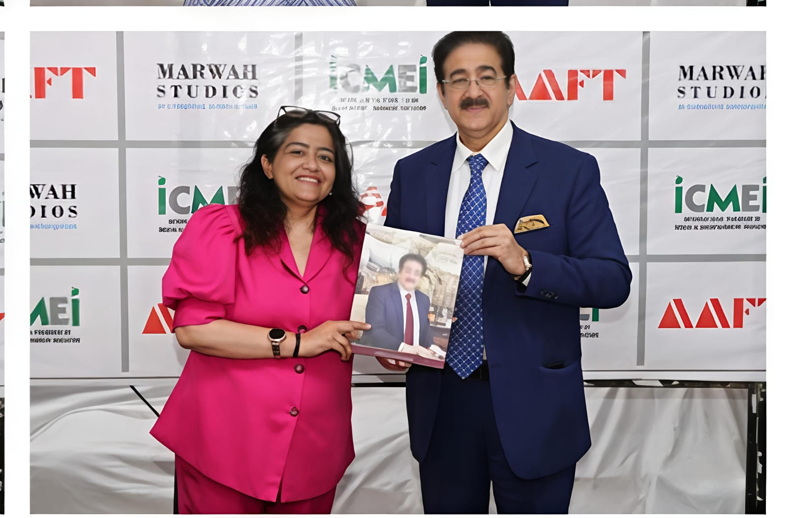
State recognition for impact in psychiatry, advocacy, and public mental-health awareness.
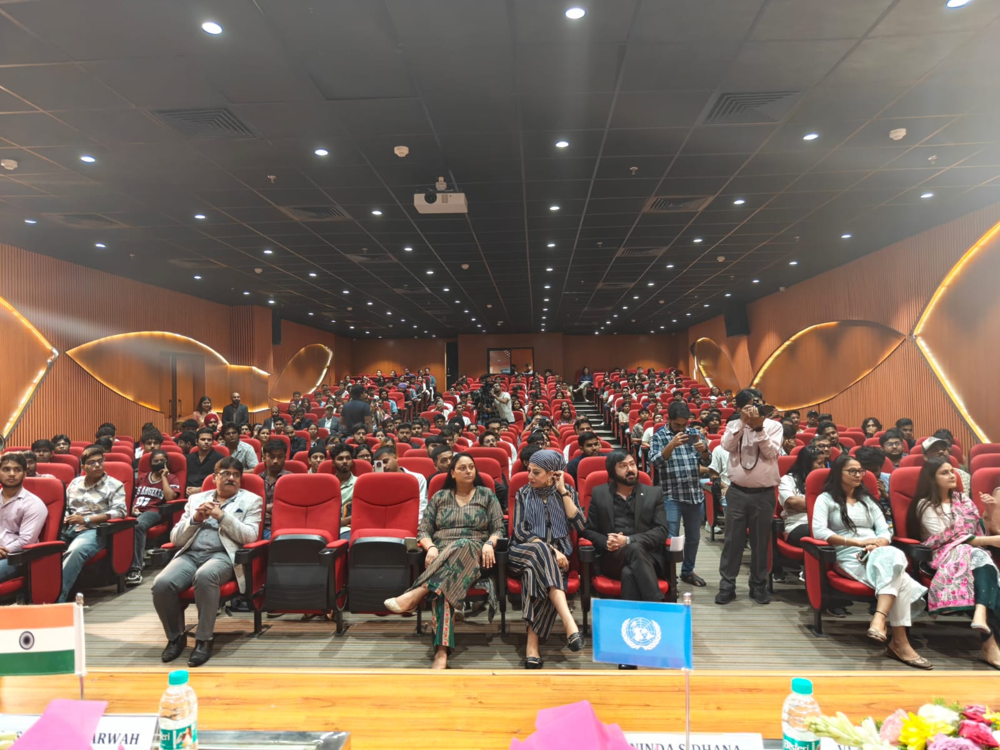
Global honour recognising women leaders driving change across health, equity, and society.
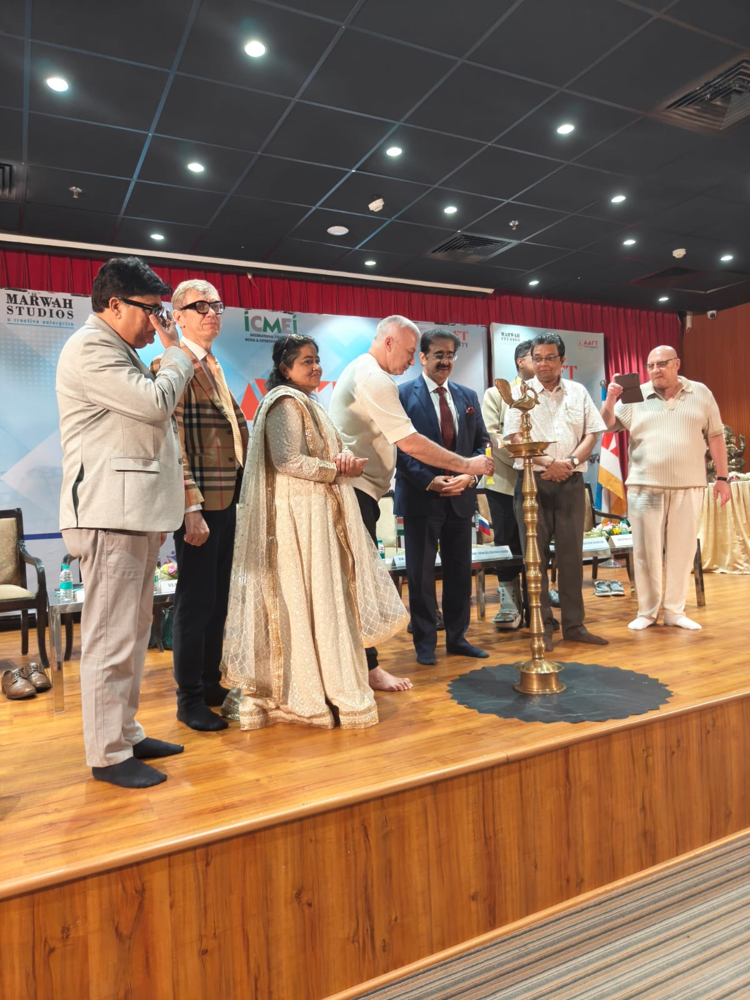
National honour for social justice and citizen action, in partnership with the United Nations.
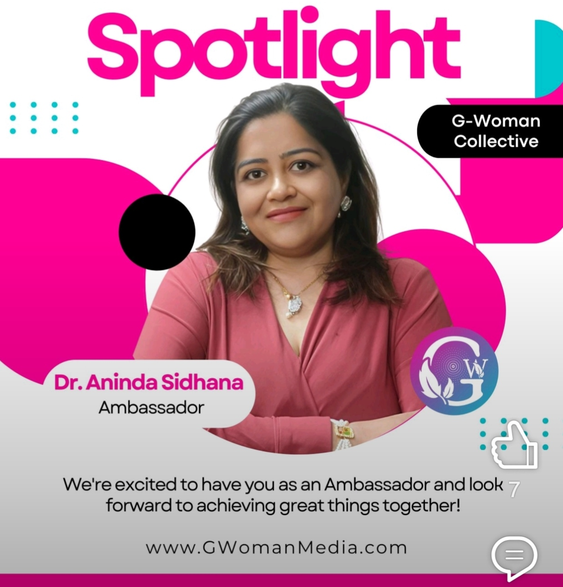
Recognition for sustained leadership and contribution to women's empowerment and wellbeing.
Moments in Time
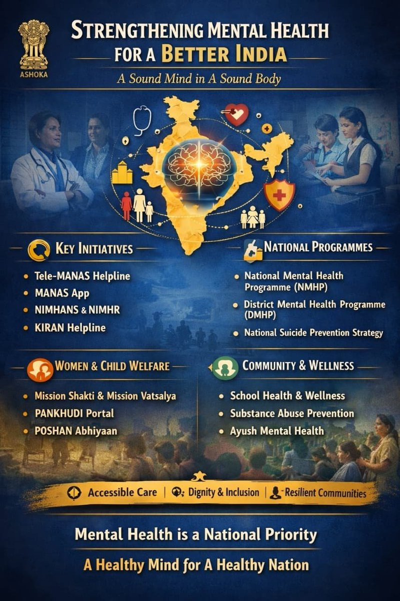
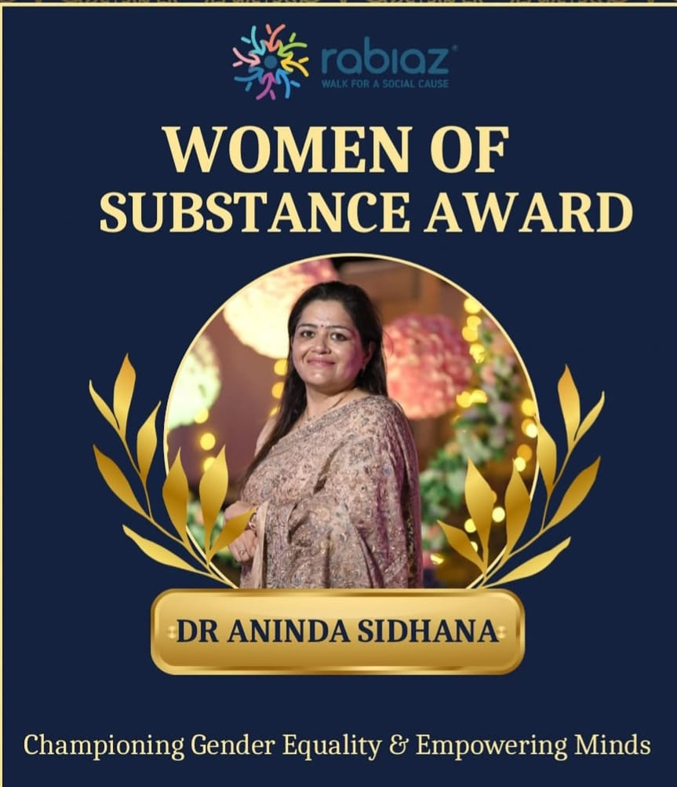
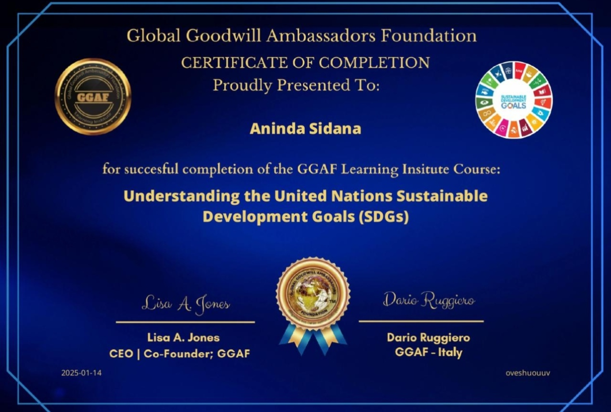
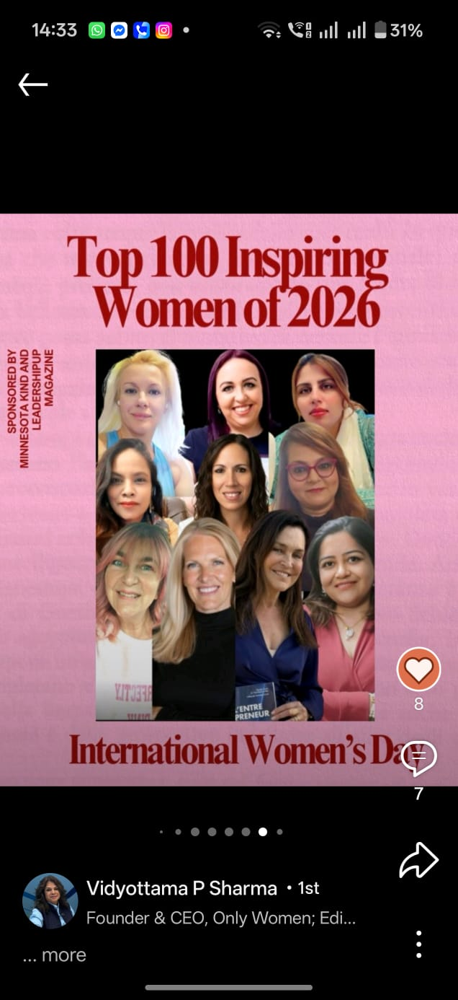
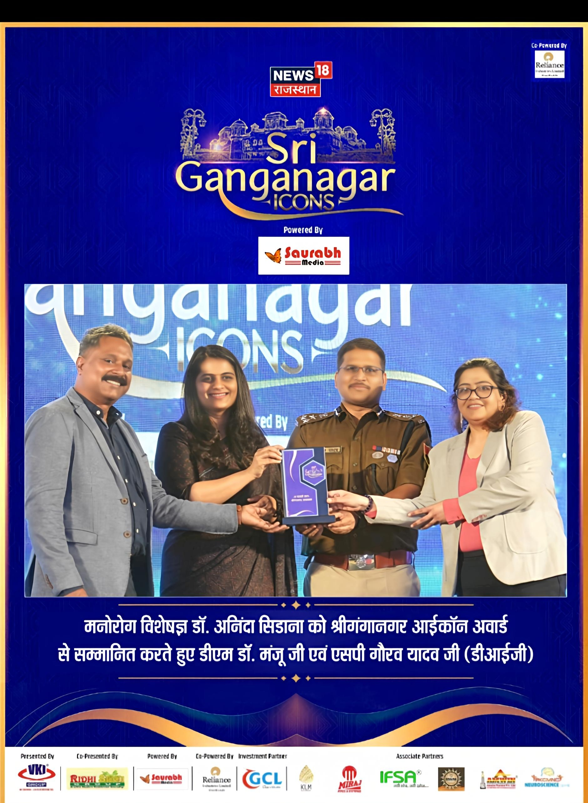
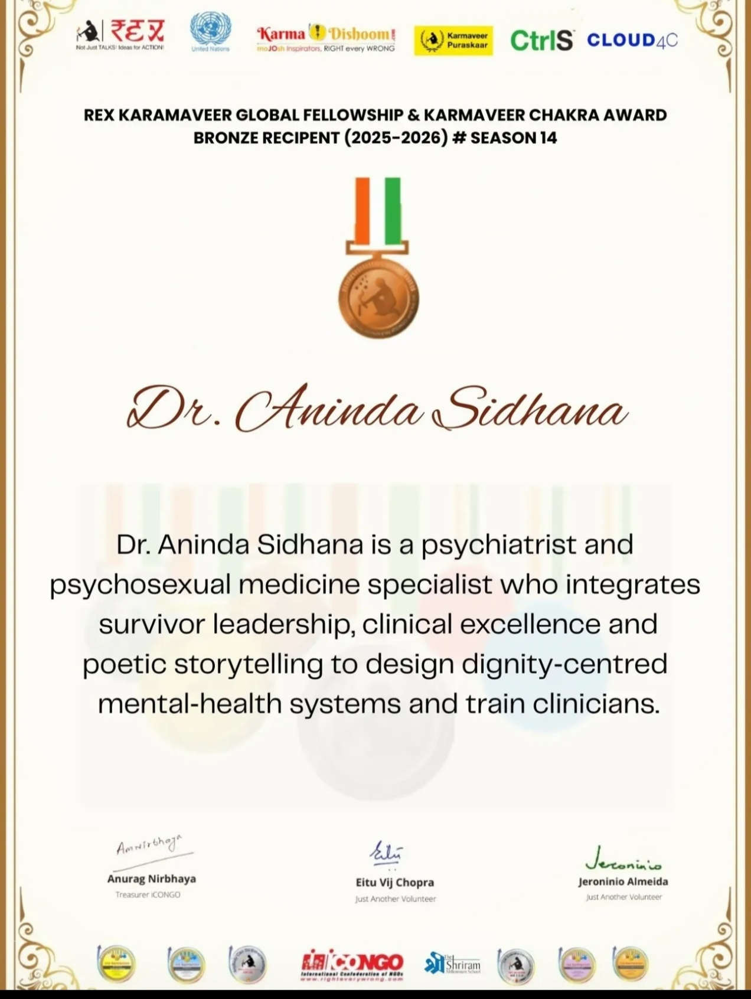
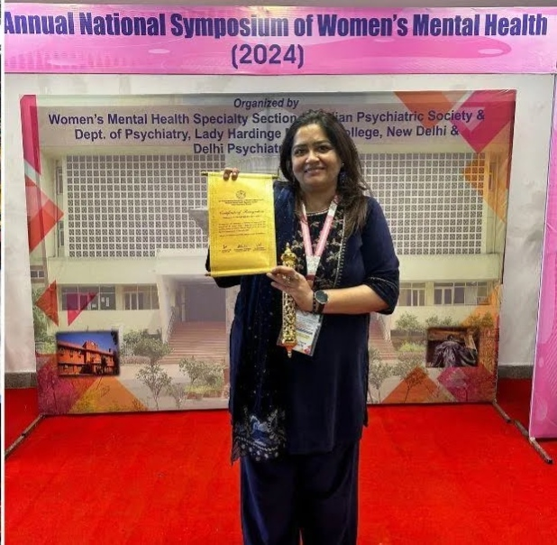
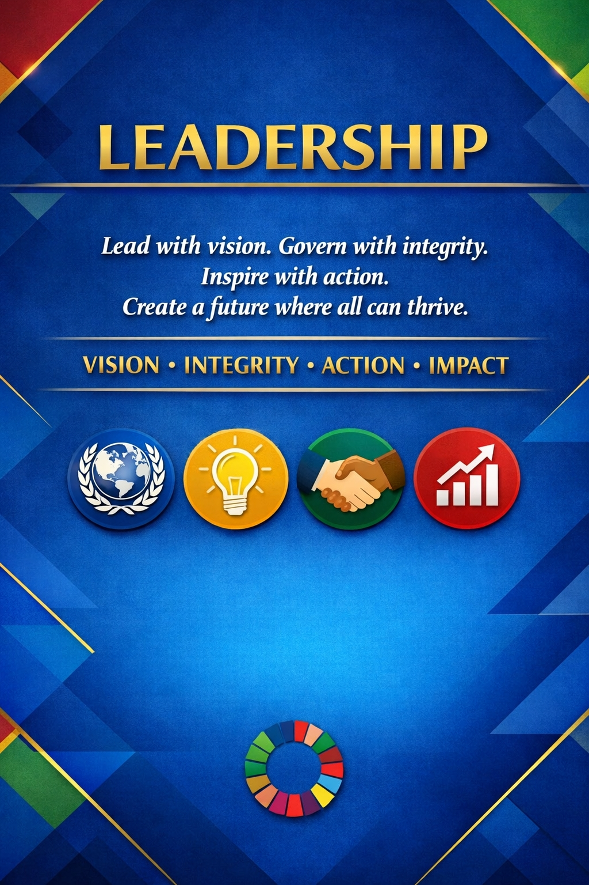
Writing, Essays & Newsletters
Dr. Aninda Sidhana writes extensively on Medium (@draninda30) and publishes The Dignity Dialogues newsletter on Substack (dranindasidhana.substack.com), blending clinical psychiatry with deep cultural critique and survivor empathy.
A deep psychiatric analysis of psychological conditioning, male privilege, and domestic behavioral patterns in traditional households.
Read on Medium →A psychological autopsy of the living spirit, examining how radical empathy and trauma survivorship intersect in global advocacy.
Read on Medium →Finding beauty in cognitive differences — moving beyond clinical labels to human-centric neuroinclusive care.
Read on Medium →Guidelines for journalists and public figures on ethical suicide prevention reporting and trauma storytelling.
Subscribe on Substack →Channeling emotional pain into narrative therapy, creative expression, and healing community dialogue.
Subscribe on Substack →Applying Viktor Frankl’s logotherapy principles to domestic violence survivors and grief recovery.
Subscribe on Substack →Receive weekly survivor reflections, psychoeducation, and relationship wellness guidance directly in your inbox.
In Their Words
It is a privilege and matter of great pride to recommend Dr. Aninda Sidhana — a psychiatrist, psychosexual medicine specialist, and a fierce advocate for mental health awareness, gender equality, and the rights of survivors of domestic violence. Her work is not only grounded in clinical expertise but also in profound personal courage and authenticity.
Dr. Roop Sidana
Psychiatrist & Clinical Director · 40+ Years in Psychiatry
Congratulations for a fighter, determined to fight violence & protect human rights of all, especially women. Three cheers!
Dr. Harish Shetty
Psychiatrist, Dr L. H. Hiranandani Hospital · Mentor
I have worked with Dr. Aninda on several cases together. She has a special touch when it comes to connecting with patients. Empathy, listening skills, keen knowledge — she brings them all.
Shruti Varma
Psychologist (BACP) · Emotional Intelligence & Energy Therapist
Dr. Aninda Sidhana is not only an excellent psychiatrist but also a genuinely compassionate human being. Her commitment to social causes, particularly in areas such as gender-based violence and LGBTQ issues, sets her apart in the field of mental health. Her insightful blogs have been widely appreciated, making a positive impact within and beyond the mental health community.
Dr. Sidhesh Phaldessai
Private Psychiatrist & Tech Innovator · MBBS, MD, MRCPsych, FRANZCP
She speaks with an authenticity that moves people and systems. Whether she's mentoring young professionals, blogging to break taboos, or advocating for redefining masculinity and equality, Dr. Sidhana brings together empathy and intellect in everything she does. Her voice is one the world urgently needs.
Dr. Indu Prakash Singh
Gold Medalist · TEDx & Motivational Speaker · Poet · Author
I've known Dr. Aninda Sidhana since our post-graduation days, and it's been incredible to see how far she's come. She has turned her personal challenges into a powerful mission — becoming one of the strongest and most compassionate advocates for women's mental health. Dr. Aninda doesn't just treat patients — she empowers them to rebuild and rediscover themselves.
Vidya Wade
Operations Leadership · Post-graduation Peer
I had the pleasure of hosting Dr. Aninda Sidhana on The Guiding Voice (TGV) Hindi podcast, and it was an absolute delight. Her passion for psychiatry and her ability to simplify complex mental health topics truly stood out. The response to her episode was overwhelmingly positive — a testament to her clarity, empathy, and expertise.
Naveen Samala
Founder & Chief Host, The Guiding Voice (TGV)
I was struck by her clarity of thought, depth of compassion, and powerful sense of purpose. Dr. Aninda Sidhana is not just a renowned psychiatrist and psychosexual medicine specialist — she is a force for change. Her commitment to women's mental health, especially in areas often left unspoken, is both bold and necessary.
Sangeeta Relan
Host, The AboutHer Show
I am honored to recommend Dr. Aninda Sidhana, a visionary leader whose work in integrative health, mental wellness, and human transformation stands at the cutting edge of modern healing. She brings a rare combination of clinical excellence, cultural sensitivity, and deep empathy — a true global advocate for compassionate care.
First Lady Swinton
First Lady, Hunnic Matinecock Tribal Nation · Host, CrownCast
Dr. Aninda Sidhana is a rare gem in her field. It is exceptional to find someone with her elite credentials who remains so grounded, accessible, and selfless. Her dedication to serving others — rather than seeking status or personal gain — is a profound contribution to humanity.
Joshua T. Berglan
Omni-Media Architect · Creator, Media Company in a Box
I highly recommend Dr. Sidhana for any Advisor or Media & Mental Health Consultant role. For production houses seeking to move beyond "shamans in white aprons" toward authentic, research-backed depictions of trauma, resilience, and human dignity, her voice is irrefutable. She scripts a Bharat that heals as it entertains.
Asif Kabani
Sr. Fellow, UN · Executive Director, SDG Center, Geneva
Her deep expertise in women's mental health and psychosexual medicine, combined with her relentless commitment to education and advocacy, is truly commendable. She brings clarity, compassion, and tireless energy to every initiative. Proud to partner with someone who's creating real impact where it matters most.
Manny Bains
Cinematic Documentary Filmmaker · Brand Storyteller
Everything a journalist, podcast host, conference organiser, or media booker needs — curated from Dr. Sidhana's full media kit, verified and ready to deploy.
Kit Includes
Get In Touch
Whether you are a media producer, conference organiser, podcast host, or individual seeking a private consultation — Dr. Sidhana welcomes the conversation. Based in Rajasthan, India, available globally.